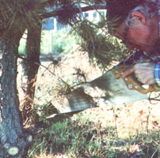
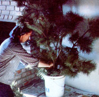
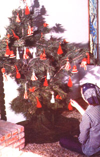

But suppose you don't want pseudospruce or fake fir? And suppose you don't have any more room to plant a tree in your yard?
Well, don't despair, because we've discovered a way to have a "real" holiday evergreen without cutting it down. We simply make our Christmas tree . . . from prunings!
Almost anyone should be able to find the raw material for a prunings tree. Just about any type of evergreen will do. We've used pyracantha, holly, juniper, and arborvitae as well as the more familiar (in this application, at least) spruce, pine, and fir. Rural homesteaders will probably be able to simply prune trees in the back forty ... improving their woodlots while they do so. Folks in urban or suburban areas can trim branches from evergreen shrubs ... or even pick up-often free of charge-trimmings from Christmas tree lots.
In order to construct a do-it-yourself tannenbaum, you'll first need to gather [1] a supply of evergreen branches from two to six feet long, [2] a big waterproof "planter" such as a plastic wastebasket or trash can, glazed ceramic pot, or large stoneware crock (don't use an ungalvanized steel container, because it might rust through after weeks of contact with water), [3] wire for fastening branches in place, and [4] enough sand or pea gravel to fill your container threequarters full.
There are probably any number of ways to assemble a batch of limbs into an attractive tree. However, we've found it easiest to first center the tallest branch in the empty container, and then wire the smaller limbs to it-one by one-making sure the cut end of each branch extends down to the bottom of the container (where it can pick up moisture and stay fresh).
It's best to start with the limbs that will form the upper branches of your tree. Begin wiring them to the "trunk" at a point high enough to cause their tips to splay out prettily around the central branch (you might also want to wire these upper limbs to the trunk at regular intervals below the top tie). Then just work your way downward, attaching each consecutive whorl of branches at a point a bit lower on the trunk than the previous-higherlimbs, and allowing their ends to drape out farther to give the festive fir its taper.
Keep adding greenery, trimming it to size and shape as necessary, until your evergreen is full and symmetrical ... then pour the sand or pea gravel into the container around the base of the newly created tree in order to provide ballast and anchor the branches. Finally, pour in enough fireproofing solution, or water, to saturate the sand or gravel thoroughly. More liquid should be added whenever the sand appears to be drying out on top.
(A simple fire-retardant solution can be made by combining the following ingredients in a gallon of water: 1 cup of ammonium sulfate, 1/2 cup of boric acid, 2 tablespoons of borax, and 1/2 cup of 3% hydrogen peroxide. These are all available from any drugstore, if you don't have them on hand already. When watered with this liquid, your tree should stay fresh, fragrant, and safe from ten days to two weeks, or about the same length of time as would a whole cut tree.)
Large evergreens will usually have to be constructed indoors because the weight of the sand and the tree together makes them awkward to move .. . but you'll find cleaning up relatively easy if you assemble your tinsel-hanger on a bare floor, or simply spread newspaper or old sheeting around to catch the debris. Table-sized models, of course, can be assembled outdoorswhere you won't have to worry about fallen needles, bark chips, and spilled sand-and carried into the house when you are ready to decorate them.
Your homemade holiday spruce won't be quite as sturdy as would a whole tree, so it's best to deck it out with lightweight ornaments and tiny, energy-saving Christmas lights. Popcorn strings, paper snowflakes, silvered cellophane icicles, and decorations made of straw, cornhusks, or yarn are just about perfect. (EDITOR'S NOTE: Directions for crafting lovely ornaments at home can be found on page 120. Another good source for creative holiday projects is Christmas in the Country by the staff of Farm Wife News, available from many bookstores or libraries or-for $4.95 plus 95 cents shipping and handling-from Mother's Bookshelf, P.O. Box 70, Hendersonville, North Carolina 28791.]
A prunings tree is a practical, lowcost alternative to an evergreen purchased from a lot. It'll be your creation, too ... and-without suffering the pangs of sawing down a beautiful live conifer-you can have some of the joy and excitement of that old-fashioned annual trip into the snowy woods in search of the perfect holiday tree ... and fill your house with the tangy scent that's said "Christmas" for so many generations!
Urbanites who can't get large evergreen branches-and probably don't have room for a big tree anyway-can create a miniature model instead. We often use rosemary for such projects, because it resembles pine in both shape and fragrance. The fresh herb isn't always easy to find, but other materials can be equally attractive . . . including holly, juniper, pyracantha, and boxwood, as well as a bevy of evergreen herbs such as thyme, germander, winter savory, lavender, and sweet myrtle.
To make a tiny tree, begin by choosing a plastic or glazed ceramic pot without a drain hole. Now, cut a sturdy branch of your selected greenery that's about twice the height of the watertight holder. This will be the main trunk, to which smaller cuttings will be wired. Attach the sprigs (green or brown pipe cleaners or twist-ties work well) to create a pleasantly symmetrical shape. As with the large tree described in the main article, all cut ends should extend well into the container, where they can get a constant supply of water.
Center the wired-together tree in its pot, add sand to hold it upright, and saturate the grit with water. Check every few days to be certain the material is still moist, bearing in mind that the smaller your container, the more quickly it will dry out.
Decorate the diminutive evergreen with featherweight miniature ornaments in keeping with its elfin size. A mere dozen wee baubles will transform the little bundle of snippings into a replica of a magnificent Christmas spruce, to make your holiday table merry and bright!
|
 |
 |
 |
|
|
|
|